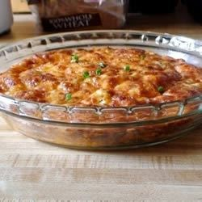
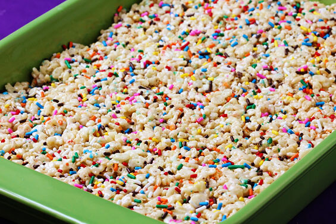

Mission: To provide fun recipes for the whole family to enjoy.
History: I grew up in a bakery, learning to knead dough before I turned 2. From an early age I was drawn to the yeast-based arts. Baking was a gateway into cooking and discovering how magical food could be.
Breakfast of the Month:
Egg and Sausage Casserole

Your neighborhood bodega's breakfast snack expanded.
Here's what I've been up to:
Testing disposable aluminum pans vs stainless steel baking pans
Tarragon: friend or foe?
Entering the county bake-off
Cookie of the Month:

Cake Batter Rice Crispy Treats
Total Time: 40 mins
Prep Time: 30 Mins
Cook Time: 10 mins
Ingredients:
4 Tbsp butter
1 10oz bag of mini-marshmallows
1/2 cup yellow cake mix
5 cups crispy rice cereal
1 (1.75oz) container of sprinkles
Directions:
Melt butter in a large saucepan over low heat and add marshmallows. Stir until they begin to melt, then remove from heat. Whisk in the (dry) cake mix, then stir in cereal so it is completely coated with marshmallow mixture. Sprinkle in half of the sprinkles and briefly stir. (Don’t stir too much or the sprinkles will bleed out their color.) Press the mixture into a baking dish (any size will do) and top with remaining sprinkles. Let sit for about 30 minutes before cutting. I find spraying a knife with nonstick spray helps to cut them cleanly.